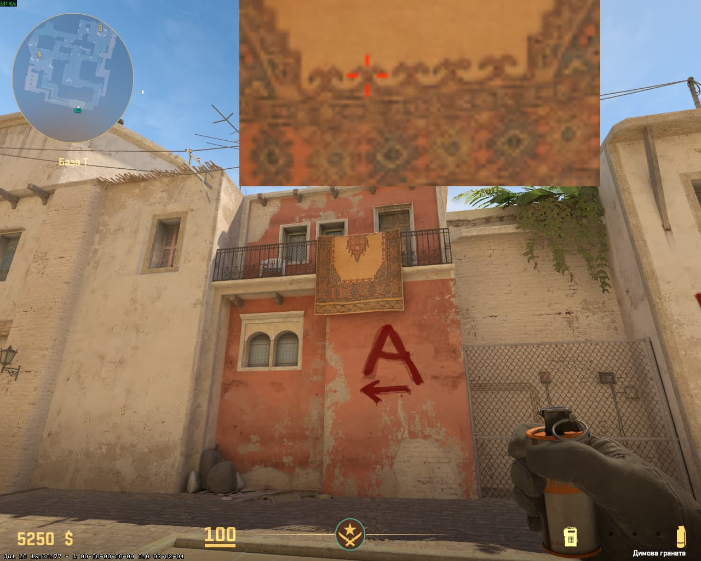
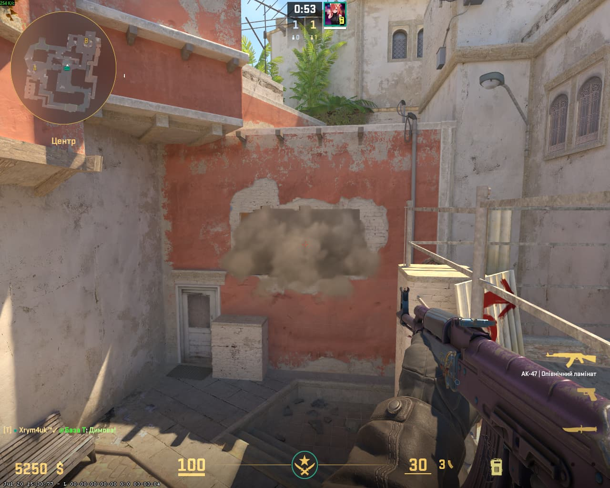

📍 Порада для телефонів: Щоб бачити сторінку точно так само, як на комп'ютері, відкрий меню браузера (3 крапки) та постав галочку «Версія для комп'ютера».
📍 1. ПОЗИЦІЯ ГРАВЦЯ

СТАВАЙ ТУТ (ПРИТУЛИСЯ ДО СТІНИ БІЛЯ ДВЕРЕЙ)
🎯 2. ЦІЛЬСЯ ТУТ

⚡ КИДОК: JUMPTHROW + ЛКМ
💥 3. ВПАДЕ ТУТ
